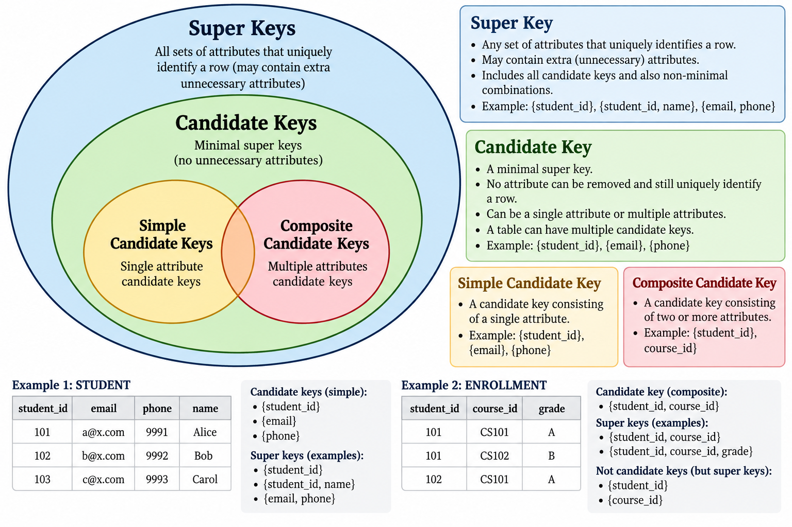

Clause execution order
FROM,JOIN,ON- Take in all source tables. Join them to create a single large table.WHERE- Filter the large combined table to remove unnecessary rows.GROUP BYHAVING- Window functions,
SELECT,distinct()- Select required columns from the table. Apply window functions if required. ORDER BYLIMIT- Return the data as result.
Nulls
- joins - will ignore null values
- sort - will put null at beginning or end depending on dbms
- group by - all nulls become a single category
- aggregates - will ignore null values (exception -
count(*)will count null valued rows too)
Key types
- Primary key - 1 column. Only 1 primary key per table.
- Super key
- any combinations of columns to pinpoint a row
- may contain unnecessary columns
- Candidate key - minimal superkey
- Composite key - key of more than 1 columns

Date handling
CAST - most portable function (part of SQL spec itself)
-- sqlserver
SELECT TRY_CONVERT(date, '26-09-2026', 105);
SELECT YEAR(date_column)
SELECT MONTH(date_col)
SELECT DATE(date_col)
-- postgres
SELECT TO_DATE('26-09-2026', 'DD-MM-YYYY');
SELECT EXTRACT(YEAR FROM date_column)
SELECT EXTRACT(MONTH FROM date_col)
SELECT EXTRACT(DAY FROM date_col)
-- spark
SELECT to_date('26-09-2026', 'dd-MM-yyyy');
SELECT YEAR(date_column)
TRY_CONVERT formatters - Sqlserver - Date and time styles
String operations
TRIM(str_col)
Wildcard characters
%- zero or more characters_- exactly one character
WHERE name LIKE 'John%'
Case sensitivity of LIKE changes with dbms.
- postgres - sensitive (use ILIKE for insensitive matching)
- sqlserver - depends on collation (Latin1GeneralCSAS vs Latin1GeneralCIAS)
- mysql - depends on collation
- spark - sensitive
Gaps and islands
| Problem | Typical technique |
|---|---|
| Consecutive values/dates | ROW_NUMBER() + grouping (make sure to dedupe) |
| Detect gaps | LAG() |
| Build groups from boundaries | LAG() + cumulative SUM() |
| Merge overlapping ranges | Running MAX() + cumulative SUM() |
Merge overlapping ranges | Running MAX() + cumulative SUM() |
Sample questions dump
Sessionization
Session in 30 minute breaks
For raw event logs stored in a sql database, count user sessions. A new session starts when the gap between an event and the immediately preceding event is greater than 30 minutes.
Columns: userid, eventtime
Approach:
- Sort events by
user_id, event_time. - Use
LAG()to get the previous event time for each user. - Start a new session when the gap from the previous event is > 30 minutes.
- Cumulatively sum the session-start flags to assign a
session_id. - Count sessions.
WITH events_with_prev AS (
SELECT
user_id,
event_time,
LAG(event_time) OVER (
PARTITION BY user_id
ORDER BY event_time
) AS prev_event_time
FROM events
),
session_starts AS (
SELECT
*,
CASE
WHEN prev_event_time IS NULL
OR DATEDIFF(MINUTE, prev_event_time, event_time) > 30
THEN 1
ELSE 0
END AS is_new_session
FROM events_with_prev
),
sessionized AS (
SELECT
*,
SUM(is_new_session) OVER (
PARTITION BY user_id
ORDER BY event_time
ROWS BETWEEN UNBOUNDED PRECEDING AND CURRENT ROW
) AS session_id
FROM session_starts
)
SELECT
user_id,
COUNT(DISTINCT session_id) AS session_count
FROM sessionized
GROUP BY user_id;
session between a login and logout event
simply count logins
SELECT
user_id,
COUNT(*) AS session_count
FROM events
WHERE event = 'login'
GROUP BY user_id;
If want to consider logout too, and there are activities between login and logout:
WITH flagged AS (
SELECT
user_id,
event_time,
event,
CASE
WHEN event = 'login' THEN 1
ELSE 0
END AS is_login
FROM events
),
sessionized AS (
SELECT
*,
SUM(is_login) OVER (
PARTITION BY user_id
ORDER BY event_time
ROWS BETWEEN UNBOUNDED PRECEDING AND CURRENT ROW
) AS session_id
FROM flagged
)
SELECT
user_id,
session_id,
MIN(CASE WHEN event = 'login' THEN event_time END) AS login_time,
MAX(CASE WHEN event = 'logout' THEN event_time END) AS logout_time
FROM sessionized
GROUP BY
user_id,
session_id;
Longest consecutive streak
Approach:
- Start with one row per
user_idandactivity_date. - Remove duplicate activity dates per user, so multiple activities on the same day don't artificially increase the streak.
- Use
ROW_NUMBER()to number each user's activity dates chronologically. - Subtract the row number from the activity date.
- Consecutive dates produce the same derived value.
- A gap produces a different derived value.
- Group by
user_idand the derived value to form each consecutive streak. - For each streak, calculate its length using
COUNT(*). - Rank the streaks for each user by length, longest first.
- Select the longest streak for each user.
WITH distinct_days AS (
SELECT DISTINCT
user_id,
activity_date
FROM user_activity
),
numbered AS (
SELECT
user_id,
activity_date,
ROW_NUMBER() OVER (
PARTITION BY user_id
ORDER BY activity_date
) AS rn
FROM distinct_days
),
islands AS (
SELECT
user_id,
activity_date,
DATEADD(DAY, -rn, activity_date) AS island_id
FROM numbered
),
streaks AS (
SELECT
user_id,
MIN(activity_date) AS streak_start,
MAX(activity_date) AS streak_end,
COUNT(*) AS streak_days
FROM islands
GROUP BY
user_id,
island_id
),
ranked AS (
SELECT
*,
ROW_NUMBER() OVER (
PARTITION BY user_id
ORDER BY streak_days DESC
) AS rank
FROM streaks
)
SELECT
user_id,
streak_start,
streak_end,
streak_days
FROM ranked
WHERE rank = 1;
Gaps
Find missing dates
Find dates on which a user had no activity.
Approach:
- Start with each user's activity dates.
- Use
LAG()to look at the previous activity date for that user. - Calculate the number of days between the current and previous activity.
- If the gap is greater than 1 day, there are missing dates between them.
- Generate those missing dates using a recursive CTE.
- Return each missing date for each user.
WITH distinct_days AS (
SELECT DISTINCT
user_id,
activity_date
FROM user_activity
),
gaps AS (
SELECT
user_id,
activity_date,
LAG(activity_date) OVER (
PARTITION BY user_id
ORDER BY activity_date
) AS previous_date
FROM distinct_days
),
missing_dates AS (
SELECT
user_id,
DATEADD(DAY, 1, previous_date) AS missing_date,
activity_date AS gap_end
FROM gaps
WHERE DATEDIFF(DAY, previous_date, activity_date) > 1
UNION ALL
SELECT
user_id,
DATEADD(DAY, 1, missing_date),
gap_end
FROM missing_dates
WHERE missing_date < DATEADD(DAY, -1, gap_end)
)
SELECT
user_id,
missing_date
FROM missing_dates
ORDER BY
user_id,
missing_date;
Islands
stock price above 100
Find periods where a stock's price was above $100 for consecutive trading days.
- Start with one row per stock and trading date.
- Create a boolean flag:
1ifclose_price > 1000otherwise.
- Use
LAG()to determine whether the previous trading day was also above$100. - A new island begins when:
- the current price is above
$100, and - the previous trading day was not above
$100.
- the current price is above
- Create an island ID using a cumulative
SUM()of the island-start flag. - Group by stock and island ID.
- Calculate the start date, end date, and number of consecutive trading days.
- Filter out islands that don't represent periods above
$100.
WITH flagged AS (
SELECT
stock_symbol,
trading_date,
close_price,
CASE
WHEN close_price > 100 THEN 1
ELSE 0
END AS is_above_100
FROM stock_prices
),
with_previous AS (
SELECT
*,
LAG(is_above_100) OVER (
PARTITION BY stock_symbol
ORDER BY trading_date
) AS previous_is_above_100
FROM flagged
),
island_starts AS (
SELECT
*,
CASE
WHEN is_above_100 = 1
AND (previous_is_above_100 = 0
OR previous_is_above_100 IS NULL)
THEN 1
ELSE 0
END AS is_new_island
FROM with_previous
),
islands AS (
SELECT
*,
SUM(is_new_island) OVER (
PARTITION BY stock_symbol
ORDER BY trading_date
ROWS BETWEEN UNBOUNDED PRECEDING AND CURRENT ROW
) AS island_id
FROM island_starts
)
SELECT
stock_symbol,
MIN(trading_date) AS period_start,
MAX(trading_date) AS period_end,
COUNT(*) AS consecutive_trading_days
FROM islands
WHERE is_above_100 = 1
GROUP BY
stock_symbol,
island_id
ORDER BY
stock_symbol,
period_start;
customer with consecutive day purchases
Find customers who made purchases on 3 or more consecutive days.
Approach:
- Start with the customer's purchase dates.
- Deduplicate dates so multiple purchases on the same day count as one active/purchase day.
- Use
ROW_NUMBER()to number each customer's purchase days chronologically. - Subtract the row number from the purchase date.
- Consecutive dates produce the same value.
- A gap produces a different value.
- Group by
customer_idand the derived value to create consecutive-day islands. - Count the number of days in each island.
- Keep islands with 3 or more days.
- Return the customer and the start/end of each qualifying streak.
WITH distinct_days AS (
SELECT DISTINCT
customer_id,
CAST(purchase_time AS DATE) AS purchase_date
FROM purchases
),
numbered AS (
SELECT
customer_id,
purchase_date,
ROW_NUMBER() OVER (
PARTITION BY customer_id
ORDER BY purchase_date
) AS rn
FROM distinct_days
),
islands AS (
SELECT
customer_id,
purchase_date,
DATEADD(
DAY,
-rn,
purchase_date
) AS island_id
FROM numbered
),
streaks AS (
SELECT
customer_id,
MIN(purchase_date) AS streak_start,
MAX(purchase_date) AS streak_end,
COUNT(*) AS streak_days
FROM islands
GROUP BY
customer_id,
island_id
)
SELECT
customer_id,
streak_start,
streak_end,
streak_days
FROM streaks
WHERE streak_days >= 3
ORDER BY
customer_id,
streak_start;
Employee consecutive employment periods
Given employment records, find continuous periods during which an employee worked for a company.
For example, an employee might have multiple employment records where one period immediately follows another.
Approach:
- Sort each employee's employment records by
start_date. - Use
LAG()to get the previous employment period'send_date. - Determine whether the current record is continuous with the previous one.
- If
start_date <= previous_end_date + 1 day, there is no gap. - Otherwise, a new employment period begins.
- If
- Create a
is_new_periodflag. - Use a cumulative
SUM()of that flag to assign a period/island ID. - Group by
employee_idand the generated period ID. - Take
MIN(start_date)andMAX(end_date)to get the complete continuous employment period.
WITH previous_periods AS (
SELECT
employee_id,
company_id,
start_date,
end_date,
LAG(end_date) OVER (
PARTITION BY employee_id
ORDER BY start_date
) AS previous_end_date
FROM employment
),
period_starts AS (
SELECT
*,
CASE
WHEN previous_end_date IS NULL
OR start_date > DATEADD(DAY, 1, previous_end_date)
THEN 1
ELSE 0
END AS is_new_period
FROM previous_periods
),
islands AS (
SELECT
*,
SUM(is_new_period) OVER (
PARTITION BY employee_id
ORDER BY start_date
ROWS BETWEEN UNBOUNDED PRECEDING AND CURRENT ROW
) AS period_id
FROM period_starts
)
SELECT
employee_id,
MIN(start_date) AS employment_start,
MAX(end_date) AS employment_end
FROM islands
GROUP BY
employee_id,
period_id
ORDER BY
employee_id,
employment_start;
Merge overlapping date ranges
Merge overlapping reservations.
Cols:
- reservation_id
- room_id
- start_date
- end_date
Approach:
- Partition reservations by
room_id. - Sort them by
start_date. - For each reservation, calculate the maximum
end_dateof all previous reservations.- We use a running
MAX(), not justLAG(). - This matters when one reservation overlaps an earlier reservation but not the immediately previous one.
- We use a running
- A new island starts when:
- there is no previous reservation, or
start_date > previous_max_end.
- Use a cumulative
SUM()of the new-island flag to generate anisland_id. - Group by
room_idandisland_id. - Take
MIN(start_date)andMAX(end_date)to produce the merged reservation periods.
WITH previous_ranges AS (
SELECT
room_id,
reservation_id,
start_date,
end_date,
MAX(end_date) OVER (
PARTITION BY room_id
ORDER BY start_date, end_date
ROWS BETWEEN UNBOUNDED PRECEDING AND 1 PRECEDING
) AS previous_max_end
FROM reservations
),
island_starts AS (
SELECT
*,
CASE
WHEN previous_max_end IS NULL
OR start_date > previous_max_end
THEN 1
ELSE 0
END AS is_new_island
FROM previous_ranges
),
islands AS (
SELECT
*,
SUM(is_new_island) OVER (
PARTITION BY room_id
ORDER BY start_date, end_date
ROWS BETWEEN UNBOUNDED PRECEDING AND CURRENT ROW
) AS island_id
FROM island_starts
)
SELECT
room_id,
MIN(start_date) AS merged_start,
MAX(end_date) AS merged_end
FROM islands
GROUP BY
room_id,
island_id
ORDER BY
room_id,
merged_start;
Given server status events, identify continuous periods of downtime.
10:00 UP
10:05 DOWN
10:10 DOWN
10:15 DOWN
10:20 UP
can use either :
LAG()to detect state transitionsLEAD()to pair a state with its recovery event.
LAG() to detect state transitions
WITH previous_status AS (
SELECT
server_id,
event_time,
status,
LAG(status) OVER (
PARTITION BY server_id
ORDER BY event_time
) AS previous_status
FROM server_status
),
downtime_starts AS (
SELECT
*,
CASE
WHEN status = 'DOWN'
AND (previous_status <> 'DOWN'
OR previous_status IS NULL)
THEN 1
ELSE 0
END AS is_downtime_start
FROM previous_status
),
downtime_groups AS (
SELECT
*,
SUM(is_downtime_start) OVER (
PARTITION BY server_id
ORDER BY event_time
ROWS BETWEEN UNBOUNDED PRECEDING AND CURRENT ROW
) AS downtime_id
FROM downtime_starts
)
SELECT
server_id,
downtime_id,
MIN(event_time) AS downtime_start,
MAX(event_time) AS last_down_event
FROM downtime_groups
WHERE status = 'DOWN'
GROUP BY
server_id,
downtime_id
ORDER BY
server_id,
downtime_start;
LEAD() to pair a state with its recovery event.
WITH events AS (
SELECT
server_id,
event_time,
status,
LEAD(event_time) OVER (
PARTITION BY server_id
ORDER BY event_time
) AS next_event_time,
LEAD(status) OVER (
PARTITION BY server_id
ORDER BY event_time
) AS next_status
FROM server_status
)
SELECT
server_id,
event_time AS downtime_start,
next_event_time AS recovery_time
FROM events
WHERE status = 'DOWN'
AND next_status = 'UP';